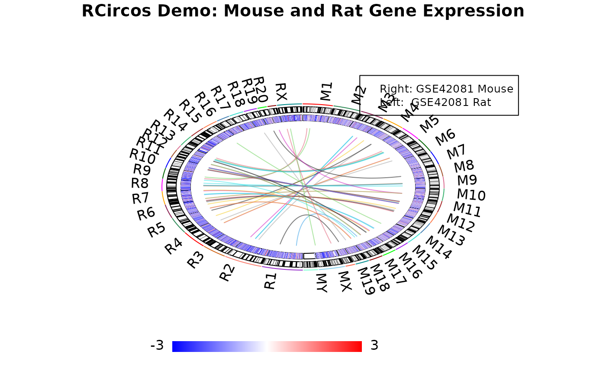

2 RCircos plot with both mouse and rat gene expression data
Authors: Hongen Zhang Reviser: Tianze Cao
2025-06-05
Source:vignettes/Demo_Mouse_And_Rat.Rmd
Demo_Mouse_And_Rat.RmdThis demo draws a heatmap with both mouse and rat gene expresion data and links between same genes.
We will put mouse data on right side and rat data on left side.
Since we are going to draw the image with both mouse and rat
chromosome ideogram, we deduct total points of each ideogram by half.
This is done by modify the base.per.unit from 3000 to 30000. Chromosome
padding will be automatically modified if we do not give it new
value.
Last revised on June 9, 2016
# Load RCircos package and defined parameters.
library(RCircos);
# Load chromosome cytoband data. We will generate
# a pseudo karyotype by concatenating the second
# ideogram data to the first one.
message("Read in cytoband data ...\n");## Read in cytoband data ...
data(UCSC.Mouse.GRCm38.CytoBandIdeogram);
data(UCSC.Baylor.3.4.Rat.cytoBandIdeogram);
# Load mouse and rat gene expression data
message("Read in gene expression data ...\n");## Read in gene expression data ...
data(RCircos.Mouse.Expr.Data);
data(RCircos.Rat.Expr.Data);
# Generate link data from the two datasets. These
# lines are regular R script code.
mouse.data <- RCircos.Mouse.Expr.Data;
rat.data <- RCircos.Rat.Expr.Data;
mouse.gene <- as.character(mouse.data$Gene);
rat.gene <- as.character(rat.data$Gene);
mouse.set <- mouse.data[mouse.gene %in% rat.gene,];
mouse.set <- mouse.set[order(mouse.set$Expr.Mean),];
last <- nrow(mouse.set);
first <- last - 49;
mouse.set <- mouse.set[first:last,];
mouse.set.gene <- as.character(mouse.set$Gene);
rat.set <- rat.data[rat.gene %in% mouse.set.gene,];
mouse.set <- mouse.set[order(mouse.set$Gene),];
rat.set <- rat.set[order(rat.set$Gene),];
link.data <- data.frame(mouse.set[,1:3], rat.set[,1:3]);
# Modify the datasets and ideogram so that they have
# same chromosome names. Please make sure the items
# in the two lists have same order.
species.list <- c("M", "R");
cyto.list <- list(UCSC.Mouse.GRCm38.CytoBandIdeogram,
UCSC.Baylor.3.4.Rat.cytoBandIdeogram);
RCircos.Multiple.Species.Core.Components(cyto.list,
species.list, NULL, 5, 5);
data.list <- list(RCircos.Mouse.Expr.Data,
RCircos.Rat.Expr.Data);
expr.data <- RCircos.Multiple.Species.Dataset(data.list,
species.list);
link.data[,1] <- paste(species.list[1], link.data[,1], sep="");
link.data[,4] <- paste(species.list[2], link.data[,4], sep="");
# Setup RCircos core components then change the
# base.per.unit to 30000 for fast drawing
params <- RCircos.Get.Plot.Parameters();
params$base.per.unit <- 30000;
RCircos.Reset.Plot.Parameters(params);
message("Initialize graphic device ...\n");## Initialize graphic device ...
RCircos.Set.Plot.Area();
# Plot chromosome ideogram, heatmap, and link lines
RCircos.Chromosome.Ideogram.Plot();
data.col <- 5;
track.num <- 1;
RCircos.Heatmap.Plot(expr.data, data.col, track.num, "in");
track.num <- 3;
RCircos.Link.Plot(link.data, track.num, FALSE);
# Add a title and a legend
title("RCircos Demo: Mouse and Rat Gene Expression");
legend(0.6, 2, legend=c("Right: GSE42081 Mouse",
"Left: GSE42081 Rat"), cex=0.8);
# Add a color key
RCircos.Plot.Heatmap.Color.Scale(max.value=3, min.value=-3,
color.type="BlueWhiteRed", scale.location=1,
scale.width=2, scale.height=0.2) 
# Done. Close the device if plot to image file...
message("R Circos Demo with mouse and Rat data done ...\n\n");## R Circos Demo with mouse and Rat data done ...